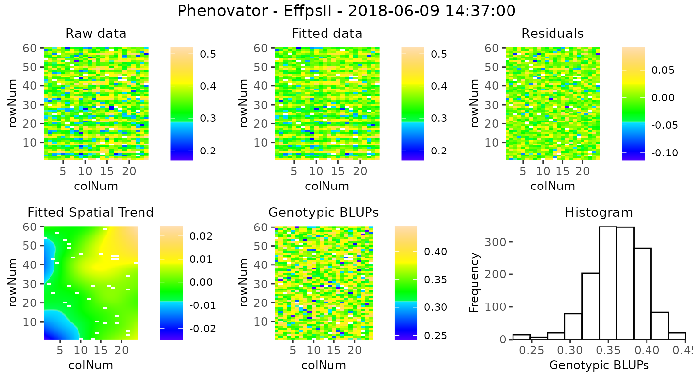
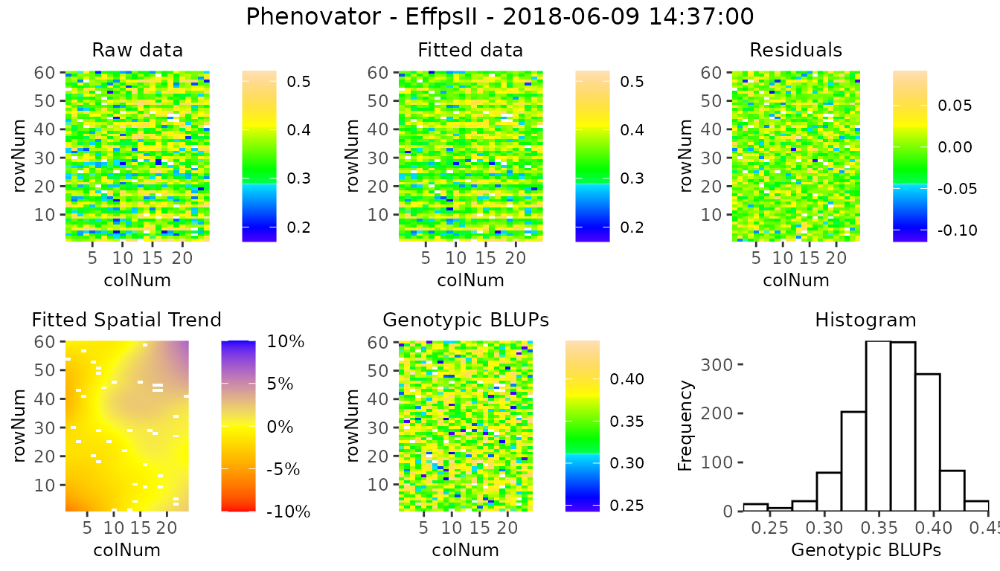
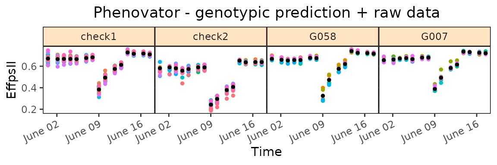
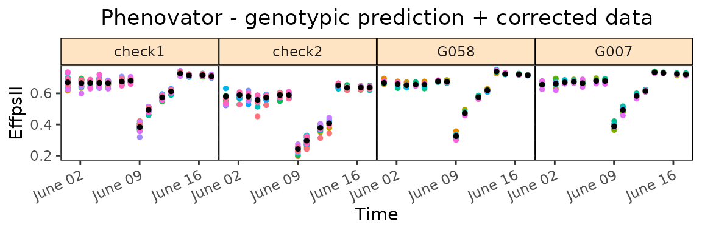
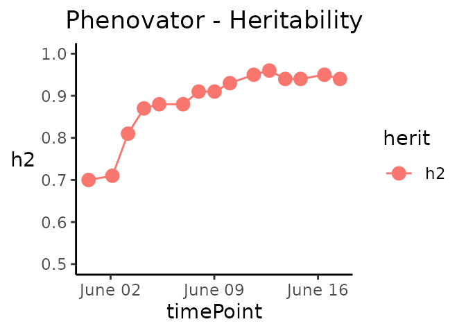
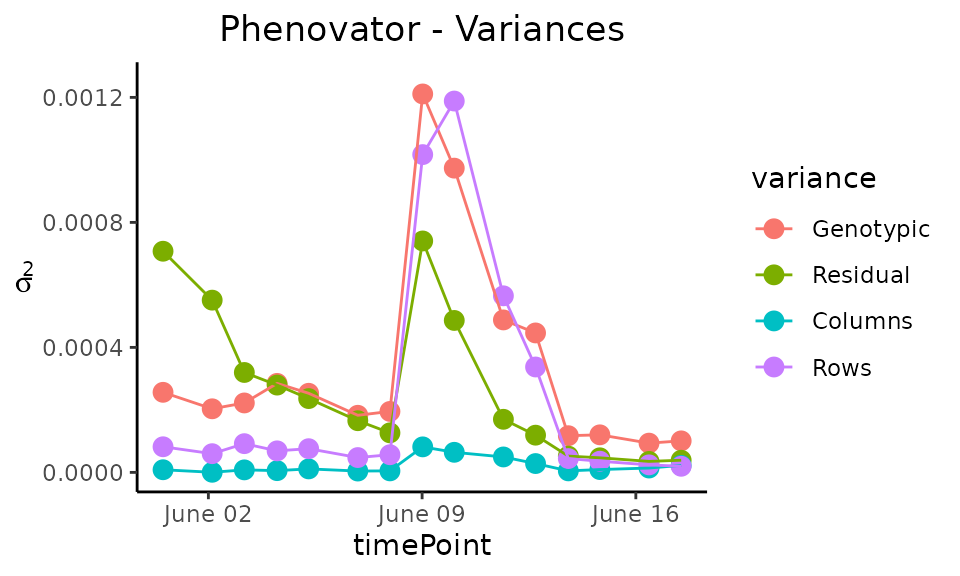
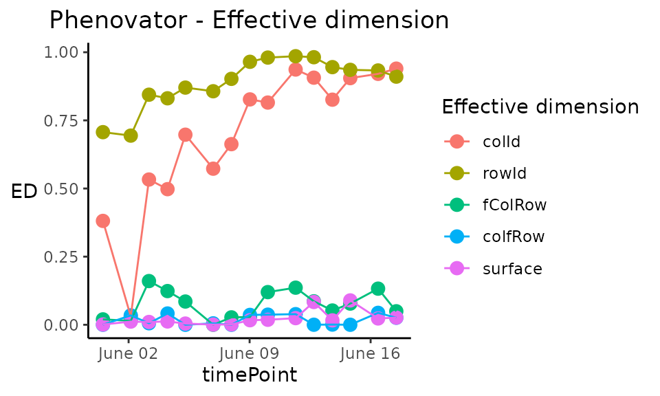
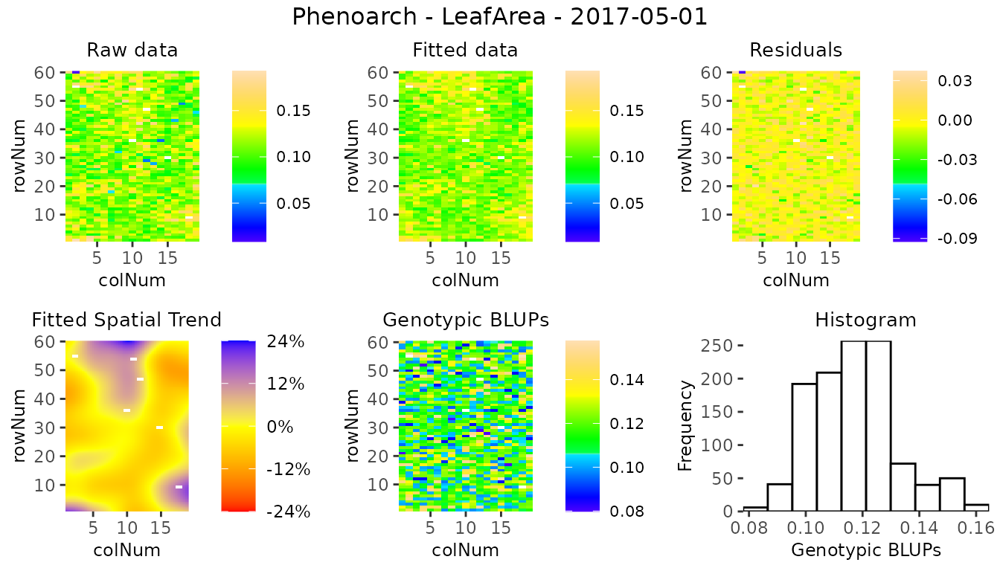
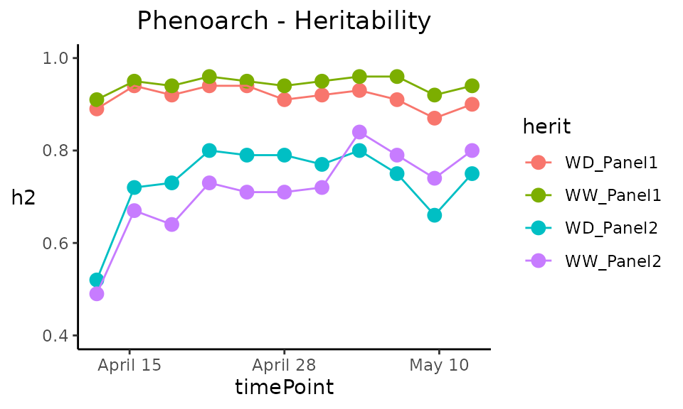
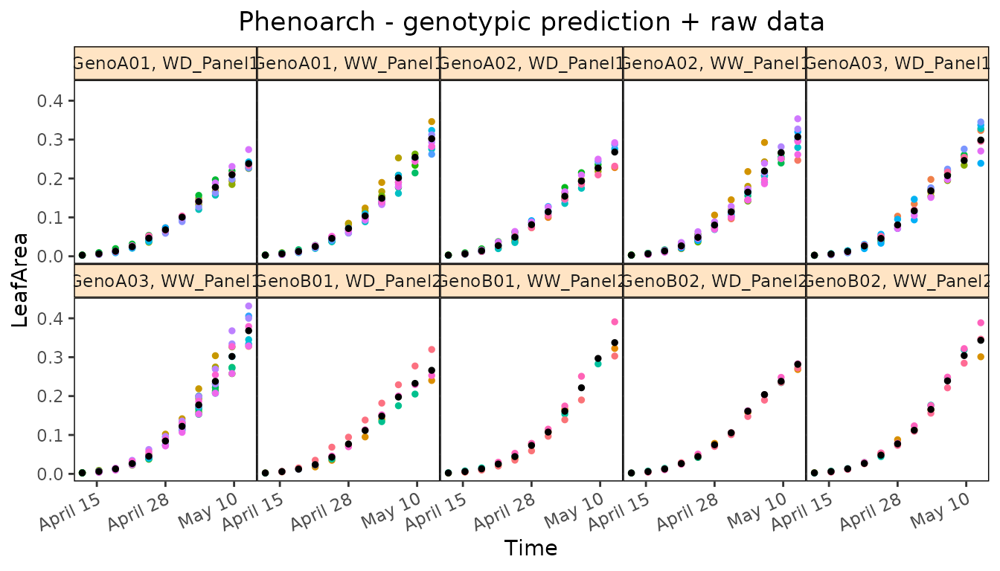

statgenHTP tutorial: 3. Correction for spatial trends
Emilie Millet, Bart-Jan van Rossum, Diana Marcela Perez Valencia, Maria Xose Rodriguez Alvarez, Fred van Eeuwijk
2024-12-19
Source:vignettes/vignettesSite/SpatialModel_HTP.Rmd
SpatialModel_HTP.RmdIntroduction
Phenotyping facilities display spatial heterogeneity. For example, the spatial variability of incident light can go up to 100% between pots within a greenhouse (Cabrera-Bosquet et al. 2016). Taking into account these spatial trends is a prerequisite for precise estimation of genetic and treatment effects. In the same way as in field trials, platform experiments should obey standard principles for experimental design and statistical modeling.
Popular mixed models to separate spatial trends from treatment and genetic effects, rely on the use of autoregressive correlation functions defined on rows and columns (AR1×AR1) to model the local trends (Cullis, Smith, and Coombes 2006). These models are sometimes difficult to fit and the selection of a best model is complicated, therefore preventing an automated phenotypic analysis of series of trials. An attractive alternative is the use of 2-dimensional P-spline surfaces, the SpATS model (Spatial Analysis of Trials using Splines, (Rodríguez-Álvarez et al. 2018)). This model corrects for spatial trends, row and column effects and has the advantage of avoiding the model selection step. It also provides the user with graphical outputs that are easy to interpret. It has proven to be a good alternative to the classical AR1×AR1 modeling in the field (Velazco et al. 2017). It is also suitable for phenotyping platform data and has been tested on several datasets in the EPPN2020 project.
The aim of this document is to accurately separate the genetic effects from the spatial effects at each time point. It will provide the user with either genotypic values or corrected values that can be used for further modeling. In brief, separately for each measurement time , a spatial model is fitted for the trait ,
where briefly,
-
,
is the intercept,
-
,
corresponds to the factors/covariates whose effects we are interested in
modeling,
-
,
corresponds to the factors/covariates whose effects we are interested in
removing,
- , corresponds the genotypic effects,
-
,
represents the spatial effects, with
corresponding to the spatial function, e.g. the
PSANOVAfunction from the SpATS package, and represent the design matrices and effects for the random row and column effects respectively, - , is the residual.
For more details see Pérez-Valencia et al. (2022).
This tutorial describes in detail how to perform analyses to correct for spatial trends using different modeling engines and how to extract the results from the models.
Modeling with spatial terms using Example 1
We will use the TP object phenoTPOut in
which annotated time points were replaced by NA because
they were considered to be outliers. (see statgenHTP tutorial: 2. Outlier
detection for single observations).
After creating a TP object, a model can be fitted on the
data. This is done using the function fitModels, which uses
two different engines for fitting the models, namely SpATS
(Rodríguez-Álvarez et
al. 2018) and ASReml (Butler et al. 2017). For models with
row and column coordinates, SpATS is the default engine (see section 2.1). This can be overruled by
specifying the function parameter engine and using ASReml
for spatial models (see section 2.2). When the row and column
coordinates are not available, ASReml is used for modeling without
spatial components (see section 3). Finally, it is possible to
decompose the genotypic variance using, for example, a treatment effect
(see section 4).
The output of fitModels is an object of class
fitMod, a list of fitted models with one item for each time
point the model was fitted for.
Spatial model using SpATS
When SpATS is used for modeling, an extra spatial term is included in
the model. This spatial component is composed using the
PSANOVA function in the SpATS package which uses
2-dimensional smoothing with P-splines as described in Lee, Durbán, and Eilers (2013) and in Rodríguez-Álvarez et al. (2018). See
help(PSANOVA, SpATS) for a detailed description. Extra
fixed effects may be fitted using the option
extraFixedFactors. The model can also be fitted following a
resolvable row-column design setting useRepId as
TRUE.
The model specifications are listed in the table below with a simplified model.
| OPTION | MODEL FITTED | SPATIAL TERM |
|---|---|---|
| default | = + genotype + rowId + colId + | PSANOVA |
| extraFixedFactors = c(“A”, “B”) | = + A + B + genotype + rowId + colId + | PSANOVA |
| useRepId = TRUE | = + repId + genotype + repId:rowId + repId:colId + | PSANOVA |
| useCheck = TRUE | = + check + genoCheck + rowId + colId + | PSANOVA |
In the models above, fixed effects are indicated in italics
whereas random effects are indicated in bold.
“genotype” can be fitted as random or fixed
effect using the option what. The option
useCheck allows treating some genotypes as check: it splits
the column “genotype” into two columns as follows:
| genotype | check | genoCheck |
|---|---|---|
| G1 | noCheck | G1 |
| G2 | noCheck | G2 |
| … | noCheck | … |
| Gn-1 | noCheck | Gn-1 |
| Gn | noCheck | Gn |
| check1 | check1 | NA |
| check2 | check2 | NA |
| … | … | … |
| checkm-1 | checkm-1 | NA |
| checkm | checkm | NA |
NOTE: It is only possible to use the combination of check and genotype as random.
Calling SpATS
Using the TP object phenoTPOut from the
previous vignette, a model for a few time points and trait “EffpsII” can
now be fitted on the data as follows. Since engine is not
supplied as an option, SpATS is used for fitting the following
model:
EffpsII =
+ genotype + rowId +
colId +
## Fit a model for a few time points.
modPhenoSp <- fitModels(TP = phenoTPOut,
trait = "EffpsII",
timePoints = seq(from = 1, to = 73, by = 5))
summary(modPhenoSp)
#> Models in modPhenoSp where fitted for experiment Phenovator.
#>
#> It contains 15 time points.
#> The models were fitted using SpATS.The output is a fitMod object, a list containing one
fitted model per time point. Note that by not supplying the
what argument to the function, genotype is set as random.
It can be run again with genotype as fixed using what:
EffpsII = + genotype + rowId + colId +
## Fit a model for a single time point.
modPhenoSpFix <- fitModels(TP = phenoTPOut,
trait = "EffpsII",
timePoints = 3,
what = "fixed")The model can be extended by including extra main fixed effects, here
to include extra experimental design factors:
EffpsII =
+ repId + Image_pos + genotype + rowId
+ colId +
## Fit a model for a single time point with extra fixed factors.
modPhenoSpCov <- fitModels(TP = phenoTPOut,
trait = "EffpsII",
extraFixedFactors = c("repId", "Image_pos"),
timePoints = 3)It can be further extended by including check genotypes:
EffpsII =
+ repId + Image_pos + check + genoCheck +
rowId + colId +
## Fit a model for a single time point with extra fixed effects and check genotypes.
modPhenoSpCheck <- fitModels(TP = phenoTPOut,
trait = "EffpsII",
extraFixedFactors = c("repId", "Image_pos"),
useCheck = TRUE,
timePoints = 3)Finally, a model following a resolvable row-column design can be
fitted: including the effects of row and column nested within
replicate.
EffpsII =
+ repId + genotype + repId:rowId +
repId:colId +
## Fit a model for a single time point.
modPhenoSpRCD <- fitModels(TP = phenoTPOut,
trait = "EffpsII",
timePoints = 3,
useRepId = TRUE)Model plots
The first type of plot that can be made for fitted models, is a
spatial plot per time point using plotType = "spatial". It
consists of plots, spatial plots of the raw data, fitted values,
residuals and either BLUEs or BLUPs, and a histogram of the BLUEs or
BLUPs. When SpATS is used for modeling an extra plot with the fitted
spatial trend is included (see (Rodríguez-Álvarez et al. 2018) and
(Velazco et al.
2017) for interpretation).
Note that spatial plots can only be made if spatial information,
i.e. rowNum and colNum, is available in the
TP object.
plot(modPhenoSp,
timePoints = 36,
plotType = "spatial",
spaTrend = "raw")
#> Error in get(paste0(generic, ".", class), envir = get_method_env()) :
#> object 'type_sum.accel' not found
For assessing the importance of the fitted spatial trends at one glance, and for comparison between time points, the plot of the fitted spatial trend can be displayed as a ratio of the raw phenotypic mean: SpatTrend(proportion) = Estimated SpatTrend / mean(raw EffpsII). In this case, the scale will be in percentage and the min/max will be adjusted based on all the time points used but will be at least 10%. This empirical threshold allows visualizing fitted trends that have a relatively small to large importance.
plot(modPhenoSp,
timePoints = 36,
plotType = "spatial",
spaTrend = "percentage")
It is also possible to create a time lapse of the ratio of spatial trends over time. The scale is the same as previously described. The time lapse is always written to an output file.
plot(modPhenoSp,
plotType = "timeLapse",
outFile = "TimeLapse_modPhenoSp.gif")Here is an illustration with three time points:

Extracting model results
All results that can be extracted are shown in the table below. The first column contains the function names. The second column contains a short description of the result that will be extracted and, where needed, states for which modeling engines it can be extracted.
| FUNCTION | DESCRIPTION |
|---|---|
| getGenoPred | Best Linear Unbiased Predictions (BLUPS, genotype as random) or Estimators (BLUEs, genotype as fixed) |
| getCorrected | Spatially corrected values at the experimental unit level |
| getVar | Variance components |
| getHerit | Generalized heritabilities - only when genotype is random |
| getEffDims | Effective dimensions - only for SpATS engine |
By default, all the functions run for all the time points. It is
possible to select some of them using timePoints. The ratio
of the effective dimensions can also be extracted using
EDType = "ratio" in the getEffDims
function.
The output of the function getGenoPred is a list of two
dataframes: “genoPred” which contains the predicted values for all
tested genotypes and “checkPred” which contains the predicted values of
the check genotypes, when useCheck = TRUE in the model.
“checkPred” is empty when useCheck = FALSE.
## Extract the genotypic predictions for one time point:
genoPredSp <- getGenoPred(modPhenoSp, timePoints = 6)
## Extract the corrected values for one time point:
spatCorrSp <- getCorrected(modPhenoSp, timePoints = 6)
## Extract model components:
varianceSp <- getVar(modPhenoSp)
heritSp <- getHerit(modPhenoSp)
effDimSp <- getEffDims(modPhenoSp)The genotypic predictions of the test genotypes for one time point are displayed in a table like the following:
| timeNumber | timePoint | genotype | predicted.values | standard.errors |
|---|---|---|---|---|
| 6 | 2018-06-02 09:07:00 | check1 | 0.6659103 | 0.0042991 |
| 6 | 2018-06-02 09:07:00 | check2 | 0.5894471 | 0.0059116 |
| 6 | 2018-06-02 09:07:00 | check3 | 0.6675676 | 0.0057804 |
| 6 | 2018-06-02 09:07:00 | check4 | 0.6746556 | 0.0042381 |
| 6 | 2018-06-02 09:07:00 | G001 | 0.6664412 | 0.0077009 |
| 6 | 2018-06-02 09:07:00 | G002 | 0.6650949 | 0.0077011 |
The corrected values are obtained by considering only the estimated
sources of variation which are of interest. Here, the correction follows
the procedure described in (Welham et al. 2004). They propose a
partition of the explanatory variables in three groups: (i) those for
which predicted values are required (i.e. population and
genotypic effects), (ii) those to be averaged over (i.e.
experimental factors effects), and (iii) those to be ignored
(i.e. spatial effects). The corrected trait is obtained as
follows (in simplified terms, for full explanation see Pérez et
al. (in prep)):
where
are the fixed covariates of interest (e.g. population effect).
This allows keeping the data at the experimental unit level (plants) and having more degrees of freedom for further modeling (e.g. time course modeling and estimation of the time course parameter(s)).
NOTE: The estimated fixed effects included in
extraFixedFactorsare removed from the corrected phenotype ().
The corrected values of one time point are displayed in a table like the following:
| timeNumber | timePoint | EffpsII_corr | EffpsII | wt | genotype | rowId | colId | plotId |
|---|---|---|---|---|---|---|---|---|
| 6 | 2018-06-02 09:07:00 | 0.6472045 | 0.645 | 1756.311 | check1 | 28 | 11 | c11r28 |
| 6 | 2018-06-02 09:07:00 | 0.6477295 | 0.658 | 1756.311 | check1 | 10 | 16 | c16r10 |
| 6 | 2018-06-02 09:07:00 | 0.6854932 | 0.678 | 1756.311 | check1 | 56 | 9 | c9r56 |
| 6 | 2018-06-02 09:07:00 | 0.6589555 | 0.669 | 1756.311 | check1 | 30 | 4 | c4r30 |
| 6 | 2018-06-02 09:07:00 | 0.6698425 | 0.669 | 1756.311 | check1 | 4 | 20 | c20r4 |
| 6 | 2018-06-02 09:07:00 | 0.6804443 | 0.679 | 1756.311 | check1 | 35 | 13 | c13r35 |
Plotting model results
Different plots can be displayed for the fitMod object.
The first one is rawPred, it plots the raw data
(colored dots, one color per plotId) overlaid with the predicted values
(black dots) from the fitted model. One plot is made per genotype with
all its plotId. These plots are put together in a 5×5 grid per
page.
Using the parameter genotypes, a subset of genotypes will
be plotted. By default, data are plotted as dots but this can be changed
by setting plotLine = TRUE.

The second one is corrPred, it plots the spatially
corrected data (colored dots, one color per plotId) overlaid with the
predicted values from the fitted model (black dots). One plot is made
per genotype with all its plotId. These plots are put together in a 5×5
grid per page.
Using the parameter genotypes, a subset of genotypes will
be plotted. By default, data are plotted as dots but this can be changed
by setting plotLine = TRUE.

Note that when check genotypes are used for modeling, for the two
previous plot types (rawPred and corrPred),
the parameter plotChecks should be set to TRUE
to display check genotypes.
plot(modPhenoSpCheck,
plotType = "rawPred",
plotChecks = TRUE,
genotypes = c("check1", "check2", "G007", "G058")) The last three types of plot display different model parameters over
time. Plot type herit plots the heritability over time.
If geno.decomp is used when fitting the model,
heritabilities are plotted for each level of the genotype groups in a
single plot (see section 4).
The scale of the plot can be adjusted using yLim.

Plot type variance plots the residual, column and
row variances over time. These plots can serve as diagnostics of the
experiment. The scale of the plot can be adjusted using
yLim.

Plot type effDim plots the effective dimension from
models fitted using SpATS over time. By default, all the spatial
components are plotted. This can be restricted using the option
whichED. The scale of the plot can be adjusted using
yLim.
plot(modPhenoSp,
plotType = "effDim",
whichED = c("colId", "rowId", "fColRow","colfRow", "surface"),
EDType = "ratio")
The effective dimensions are also known as the effective degrees of freedom. They can be interpreted as a measure of the complexity of the corresponding component: if the effective dimension of one component is large, it indicates that there are strong spatial trends in this direction. For better comparison between components, the ratio of effective dimensions vs. total dimensions can be used. It has a value between 0, no spatial trend, and 1, strong spatial trend (almost all the degrees of freedom are used to model it).
The table below gives an overview of the effective dimensions and an explanation of their meaning.
| EFFECTIVE DIMENSION | EXPLANATION |
|---|---|
| colId | Linear trend along columns |
| rowId | Linear trend along rows |
| fCol | Smooth trend along columns |
| fRow | Smooth trend along rows |
| fColRow | Linear trend in rows changing smoothly along cols |
| colfRow | Linear trend in cols changing smoothly along rows |
| fColfRow | Smooth-by-smooth interaction trend over rows and cols |
| surface | Sum of smooth trends |
Spatial model with ASReml
When ASReml is used for modeling and spatial = TRUE,
four models are fitted with different random terms and covariance
structures. The best model is determined based on a goodness-of-fit
criterion, AIC, on 20% of the time points or at least 10 time points.
The best model is then run on all time points. As for SpATS, all the
ASReml models can be extended by fitting extra fixed factors using the
option extraFixedFactors.
Note that for the moment, it is only running with ASReml-R version 4 or higher.
| OPTION | MODEL FITTED | SPATIAL TERM |
|---|---|---|
| spatial = TRUE | = + genotype + row + col + | AR1(rowId):AR1(colId) |
| AR1(rowId):colId | ||
| rowId:AR1(colId) | ||
| - | ||
| spatial = TRUE, extraFixedFactors = c(“A”, “B”) | = + A + B + genotype + row + col + | AR1(rowId):AR1(colId) |
| AR1(rowId):colId | ||
| rowId:AR1(colId) | ||
| - | ||
| spatial = TRUE, repID = TRUE | = + repId + genotype + repId:row + repId:col + | AR1(rowId):AR1(colId) |
| AR1(rowId):colId | ||
| rowId:AR1(colId) | ||
| - |
In the models above, fixed effects are indicated in italics
whereas random effects are indicated in bold.
“genotype” can be fitted as random or fixed
effect using the option what. The option
useCheck is not displayed in the table but works the same
as for SpATS: treating some genotypes as check (see section 2.1 for details).
Calling ASReml is done by changing the engine option in
the fitModels function.
if (requireNamespace("asreml", quietly = TRUE)) {
## Fit a model on few time points with spatial function:
modPhenoSpAs <- fitModels(TP = phenoTPOut,
trait = "EffpsII",
timePoints = seq(from = 1, to = 73, by = 5),
engine = "asreml",
spatial = TRUE)
summary(modPhenoSpAs)
}Here the best spatial model is: trait = genotype + row + col + , with a spatial component: AR1(rowId):AR1(colId). It has been selected using 10 time points.
Plotting and extracting results is then done the same way as for SpATS. Below are a few examples.
if (requireNamespace("asreml", quietly = TRUE)) {
spatCorrSpAs <- getCorrected(modPhenoSpAs, timePoints = 6)
}
if (requireNamespace("asreml", quietly = TRUE)) {
plot(modPhenoSpAs,
plotType = "herit",
yLim = c(0.5, 1))
}Note that when the engine is ASReml, the heritability is calculated using the formula provided in (Cullis, Smith, and Coombes 2006).
Modeling without spatial terms with ASReml
When the row and column coordinates are not available, only ASReml can be used for modeling. In that case, the model simply uses the genotype and the extraFixedFactors, if any.
| OPTION | MODEL FITTED | SPATIAL TERM |
|---|---|---|
| spatial = FALSE | = genotype + | - |
| spatial = FALSE, extraFixedFactors = c(“A”, “B”) | = A + B + genotype + | - |
In the models above and below, fixed effects are indicated in
italics whereas random effects are indicated in
bold. genotype can be fitted as
random or fixed effect using the option
what. The option useCheck is not displayed in
the table, but works the same as for SpATS (see section 3.1).
Modeling with decomposition of genotypes using Example 2
When an experimental treatment is applied, for example, a water scenario, it is required to decompose the genotypic variance into the levels of the treatment. In the following example, two water scenarios, well-watered (WW) and water deficit (WD), were applied. Thus, instead of modeling one genotypic variance, there will be one genotypic variance per treatment. In this part, we will describe briefly what is specific of such modeling with the statgenHTP package using the second example data set.
We will use the TP object
phenoTParchOut in which annotated time points have been
replaced by NA (see statgenHTP tutorial: 2. Outlier
detection for single observations).
We can first check the number of time points containing data for a given trait:
countValid(phenoTParchOut, "LeafArea")
#> 2017-04-13 2017-04-14 2017-04-15 2017-04-16 2017-04-17 2017-04-18 2017-04-19
#> 815 1346 1666 1665 1669 1671 1192
#> 2017-04-20 2017-04-21 2017-04-22 2017-04-23 2017-04-24 2017-04-25 2017-04-26
#> 1532 823 1673 1617 1221 1672 1072
#> 2017-04-27 2017-04-28 2017-04-29 2017-04-30 2017-05-01 2017-05-02 2017-05-03
#> 1673 1134 1137 1074 1134 1137 1092
#> 2017-05-04 2017-05-05 2017-05-06 2017-05-07 2017-05-08 2017-05-09 2017-05-10
#> 1449 782 1058 1240 1034 665 885
#> 2017-05-11 2017-05-12 2017-05-13 2017-05-14 2017-05-15
#> 1022 1313 1044 452 840In this case, time point “2017-05-14” has only 455 observations, less than half of the total number of observations. It can bias the modeling at this time point and one may want to remove it before running the spatial analysis.
# getTimePoints(phenoTParchOut)
phenoTParchOut <- removeTimePoints(phenoTParchOut,
timePoints = 32)Modeling
Using the geno.decomp option when modeling will have two
main consequences in the model: the geno.decomp variable(s)
will be added as a fixed main effect for the grouping factor and
separate variance components for the genotypes at each level of the
grouping or decomposing factor (and the extraFixedFactors and/or check,
if any, with SpATS only). The table below provides one example with
three models:
| OPTION | ENGINE | MODEL FITTED | SPATIAL TERM |
|---|---|---|---|
| geno.decomp = “treatment” | SpATS | = + treatment + treatment:genotype + rowId + colId + | PSANOVA |
| geno.decomp = “treatment”, useCheck = TRUE, extraFixedFactors = “covar1” | SpATS | = + treatment + treatment:covar1 + treatment:check + treatment:genoCheck + rowId + colId + | PSANOVA |
| spatial = TRUE, geno.decomp = “treatment” | ASReml | = + treatment + treatment:genotype + rowId + colId + | AR1(rowId):AR1(colId) |
NOTE: At the moment, it is not possible to use the combination of
geno.decompandwhat = "fixed".
Using the Phenoarch example, we will apply a genotype decomposition using the variables “Scenario” and “population”:
Output
Extracting results and plotting from the models work exactly the same as previously. For example, the spatial plot on this data set looks like the following for one time point:

There are some significant differences in the display of some results and plots. They are highlighted below.
The predictions have two values per genotype, one for each level of
the decomposition geno.decomp, here “Scenario_population”,
as illustrated in the table below for three genotypes predicted from the
SpATS model modPhenoSpGD.
| timeNumber | timePoint | geno.decomp | genotype | predicted.values | standard.errors |
|---|---|---|---|---|---|
| 16 | 2017-04-28 | WD_Panel1 | GenoA01 | 0.0680753 | 0.0032742 |
| 16 | 2017-04-28 | WD_Panel1 | GenoA02 | 0.0812845 | 0.0032697 |
| 16 | 2017-04-28 | WD_Panel2 | GenoB01 | 0.0767823 | 0.0043653 |
| 16 | 2017-04-28 | WD_Panel2 | GenoB02 | 0.0748107 | 0.0043197 |
| 16 | 2017-04-28 | WW_Panel1 | GenoA01 | 0.0714313 | 0.0025789 |
| 16 | 2017-04-28 | WW_Panel1 | GenoA02 | 0.0802842 | 0.0025788 |
| 16 | 2017-04-28 | WW_Panel2 | GenoB01 | 0.0731028 | 0.0041211 |
| 16 | 2017-04-28 | WW_Panel2 | GenoB02 | 0.0771899 | 0.0041214 |
The heritabilities are now given for each of the
geno.decomp levels and their plot now displays one line per
level.
| timeNumber | timePoint | WD_Panel1 | WW_Panel1 | WD_Panel2 | WW_Panel2 |
|---|---|---|---|---|---|
| 1 | 2017-04-13 | 0.89 | 0.91 | 0.52 | 0.49 |
| 4 | 2017-04-16 | 0.94 | 0.95 | 0.72 | 0.67 |
| 7 | 2017-04-19 | 0.92 | 0.94 | 0.73 | 0.64 |
| 10 | 2017-04-22 | 0.94 | 0.96 | 0.80 | 0.73 |
| 13 | 2017-04-25 | 0.94 | 0.95 | 0.79 | 0.71 |
| 16 | 2017-04-28 | 0.91 | 0.94 | 0.79 | 0.71 |

The prediction and corrected data plots display one plot per combination genotype × geno.decomp.
